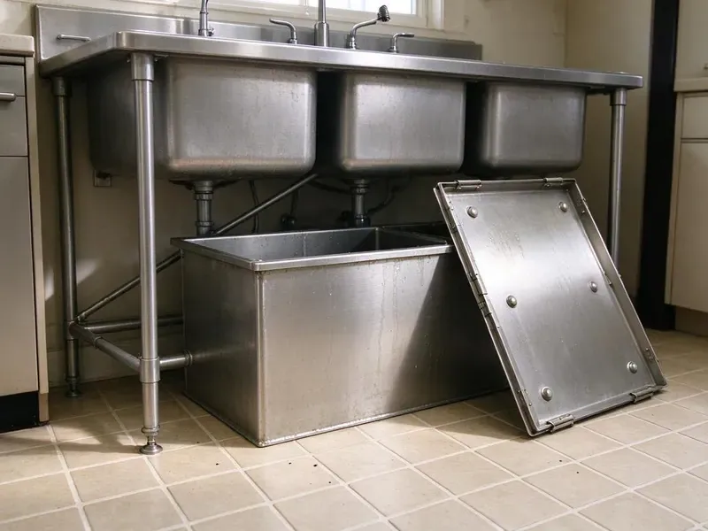

Garbage Disposal Replacement in Valley City, ND
HPN Plumbing replaces InSinkErator, Waste King and Moen disposals in Valley City, ND, with the old unit hauled off.
- Old Unit Removed
- All Major Brands
- Every Joint Leak Tested
- Flat Price Up Front

Time for a New Garbage Disposal in Valley City, ND?
Call now and we can often replace your disposal the same day.
Disposal Swaps Done Right in Valley City, ND
HPN Plumbing handles disposal replacement throughout Valley City, ND, from straight swaps to brand changes. Switching brands means a new mount. InSinkErator, Waste King and Moen each use their own mounting system, so we replace the sink flange and mount along with the unit when the brand changes.
Work we handle every week:
- Installing stronger replacement units
- Replacing every major disposal brand
- Wiring and plumbing reconnection

Additional Kitchen Plumbing Services in Valley City, ND
Our kitchen plumbing services in Valley City, ND cover sinks, disposals, dishwashers, and grease traps so your kitchen stays clean, safe, and fully functional.


Customers
Why Choose HPN Plumbing for Garbage Disposal Replacement in Valley City, ND?
A replacement should last ten years or more. That depends on the unit, the install and how it gets used, so we pick a model that fits your cooking, install it to the maker's specs and show you what to keep out of it in your Valley City home.
- Haul-Away, We remove the old unit and haul it off.
- Proven Brands, We install InSinkErator, Waste King and Moen, brands with good parts support.
- Code Compliance, Every replacement follows local Valley City, ND plumbing code for traps and dishwasher drains.
Citywide Coverage
No matter where you live in Valley City, a plumber can usually reach you the same day. We dispatch from nearby. Each call goes to the nearest plumber carrying the right unit, which keeps the wait short when the sink is full of water.
Experienced Team
Each week our team replaces disposals across every major brand and mount style. They know the mounts by feel. That makes tight cabinets and awkward drain layouts manageable, since they are not fumbling with instructions while lying under the sink with a flashlight.
Safety-First Approach
Every disposal replacement starts with the power off at the breaker or plug. A meter confirms the wires are dead. The new unit gets a ground connection and a strain relief clamp on the cord, so vibration cannot work the cord loose inside a damp cabinet over the years.
Trusted Certified Valley City Plumbing Services Professionals
At HPN Plumbing, we are proud to offer certified plumbing services throughout Valley City, ND. Those papers on the wall mean something. Every repair, install and maintenance visit follows strict safety and quality rules, and the plumbers doing the work carry recognized industry credentials.
Call Us Now PHCC Plumbing Contractor Recognition
PHCC Plumbing Contractor Recognition Better Business Bureau (BBB) Accreditation
Better Business Bureau (BBB) Accreditation Angi Certified Pro
Angi Certified Pro ISO 9001 Quality Management Certification
ISO 9001 Quality Management CertificationGarbage Disposal Replacements We Handle in Valley City, ND
Upgrading During Replacement in Valley City, ND
A swap is the right moment to move up in horsepower, from an old 1/3 HP to a 1/2 or 3/4 HP unit. Larger units are taller, so we measure the cabinet and check that the discharge outlet will still sit above the trap, since a disposal outlet below the wall stub leaves water standing in the chamber. Sound insulation makes a big difference. Most people notice it the first night.

Disposal Housing Leak Replacement in Valley City
When a disposal leaks from the body, the internal seal has usually failed. This cannot be repaired. The leaking unit comes out, the cabinet gets checked for damage, and a new disposal goes on fresh hardware before we test every connection with water.
Like-for-Like Disposal Swap in Valley City
When the old unit and the new one share a mount, the swap is quick and the trap usually lines up without changes. We still replace the flange gasket and putty if they have hardened, and we check the discharge tube for cracks, since old plastic tubes split right at the gasket. It is about an hour. We haul the old one away.
Emergency Disposal Replacement in Valley City
A disposal leaking onto the cabinet floor needs to come out before the particleboard swells. Turn it off at the switch, stop running the dishwasher and put a pan under the leak, then call us, and we will usually be there the same day with a replacement unit on the truck. Stop running it. Every use pushes more water through the failed seal.
Commercial Disposal Replacement in Valley City, ND
Commercial disposals run 1 to 5 horsepower and typically come with a solenoid valve and control box. We replace the unit on its mounting collar, reconnect the controls so water runs whenever the motor does, and check the drain to the grease trap where the local rules require it. Downtime costs money. We come before or after your rush.
Upgrading to a Quieter Disposal in Valley City
Older disposals can be loud and rattle the sink. Newer models include sound insulation, anti-vibration mounts and better motor balance, and pairing one with a thicker sink pad cuts the noise even more in a stainless sink. The difference is easy to hear.
Commercial Unit Replacement in Valley City
Restaurant disposals take a beating every shift, and when one fails the dish line backs up. Failed units get replaced with heavy-duty models sized for your volume, and we check the controls, the solenoid and local sewer rules. Local rules vary.

Higher Horsepower Disposal Upgrades in Valley City, ND
If your old disposal struggles, a 3/4 or 1 HP unit can help. More power means fewer jams and finer grinding, and we confirm that your electrical supply and cabinet space can handle the larger unit before we install and test it. Most kitchens can take it.
Local Disposal Replacement in Valley City, ND
Looking for disposal replacement near you in Valley City, ND? HPN Plumbing has plumbers in the area most days, which often makes a same-day swap possible. Check the label on the old unit. The model number on the bottom of the old disposal tells us which mount you have, so we can bring a replacement that fits without changing the flange.
A backed-up sink needs a fast answer. Our plumbers work across Valley City every day with replacement units on the truck, so most swaps finish in about an hour once we arrive and the old unit leaves with us. One visit does it.
HPN Plumbing at a Glance
- Licensed and insured plumbers serving Valley City, ND
- Same-day appointments and 24/7 emergency response
- Clear written estimates, no hidden fees
- 4.9-star rated by 408+ North Dakota customers
Valley City Map
Valley City Information
- Population
- 6,551
- Area codes
- Local
- Service area
- Valley City and towns within a 40 mile drive
- Nearby
- Jamestown, West Fargo, Horace, Fargo
A disposal that leaks from the housing or trips every week in Valley City, ND is usually done for. Many rural homes get water from private wells or rural water systems, and iron and sulfur odors are common complaints.
Talk to a Plumber
Reach out to HPN Plumbing for reliable plumbing work done by licensed pros in Valley City, ND.
Our Specialized Plumbing Services in Valley City, ND
At HPN Plumbing, we handle the full list of plumbing services across Valley City, ND. We go from leak detection all the way to full system installations, for homes and commercial buildings, and we do it quickly at a fair price. Here are the core services we offer:


From Old Unit to Grinding Again in Valley City, ND
Here is how a disposal replacement goes with HPN Plumbing in Valley City, ND.
Call for a Price
Call (701) 403-1348 and describe your current unit. We will quote the unit and labor together.
Check the Old Unit
Your plumber makes sure replacement is the right call at your Valley City home and helps you pick the new unit.
Remove and Install
We remove the failed unit, install the new one on a fresh mount and run it with water to check for leaks.
Frequently Asked Questions About Garbage Disposal Replacement in Valley City
Most replacements run $200 to $600 with the unit. A basic 1/3 HP unit costs around $100 while a premium 1 HP model can top $300, and labor plus any drain or wiring changes make up the rest. We quote before starting.
Our usual picks are InSinkErator, Waste King, Moen and GE. Power, noise and warranty usually decide it.
Not much. Keep fibrous and hard scraps out, run cold water and toss in ice or citrus peels occasionally. Running cold water for a few seconds after each use flushes ground food past the trap and keeps buildup from settling in the drain arm.
Most swaps take about an hour. New wiring or drain work adds time.
A like-for-like swap usually needs no permit. New wiring, a new circuit or changes to the drain piping can require one depending on local rules, and our plumbers tell you before the work starts.
Usually one to two hours. That covers removing the old unit, installing the new one and testing, and a brand change or drain work can add a little time.
One to two hours covers most swaps. Removing the old unit, installing the new one and testing are all included, though a brand change, lowered drain or new wiring adds time.
Manufacturer warranties typically run one to ten years, by model and brand. HPN Plumbing also warranties the installation labor.
What People Are Saying About Our Plumbing Experts?

Diane F.
My kitchen faucet had dripped for months and I finally got tired of hearing it at night. HPN Plumbing came out the next morning, replaced the cartridge and the O rings, and tightened a loose base that was letting water under the sink.
Faucet Repair · Wahpeton, ND
Kevin O.
Before buying our house I paid for a sewer camera inspection. HPN Plumbing found a belly in the line that held standing water about forty feet from the cleanout. We used the video to get the sellers to fix it before closing.
Sewer Camera Inspection · Jamestown, NDKaren W.
After our third pinhole leak in copper, we stopped patching. HPN Plumbing gave us a written plan room by room and repiped the house in PEX while we stayed in it. The crew covered our floors every morning and cleaned up every night.
Repiping · West Fargo, NDRobert G.
The camera showed a full break in our clay sewer line near the street. HPN Plumbing replaced it with a trenchless pipe burst, so the only digging was two small pits in the yard. They let us watch the footage before and after.
Sewer Line Replacement · Fargo, ND
Daniel K.
A pipe burst in the garage ceiling at 11 at night. Someone answered on the second ring, and the plumber was in my driveway about fifty minutes later. He shut off the main, cut out the split section, and had water back on before 2 am.
Emergency Plumbing · West Fargo, NDCarlos V.
Our house still had galvanized pipe, and upstairs the shower was a trickle. The crew repiped everything in PEX over three days and patched every drywall hole before they left. The pressure difference is night and day.
Repiping · Grand Forks, ND